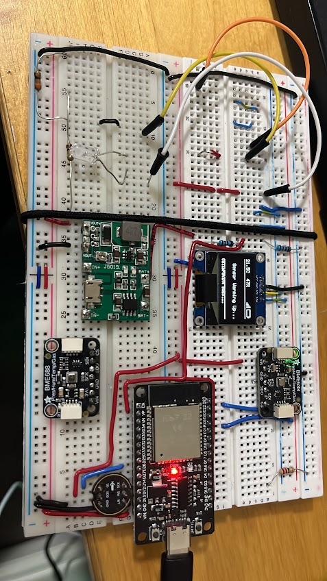
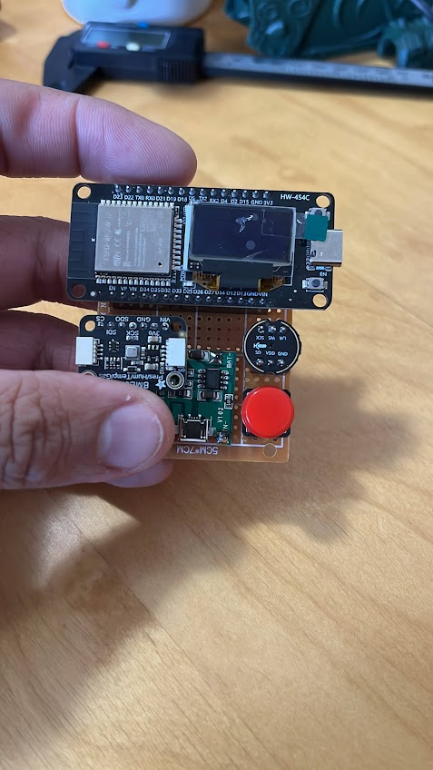
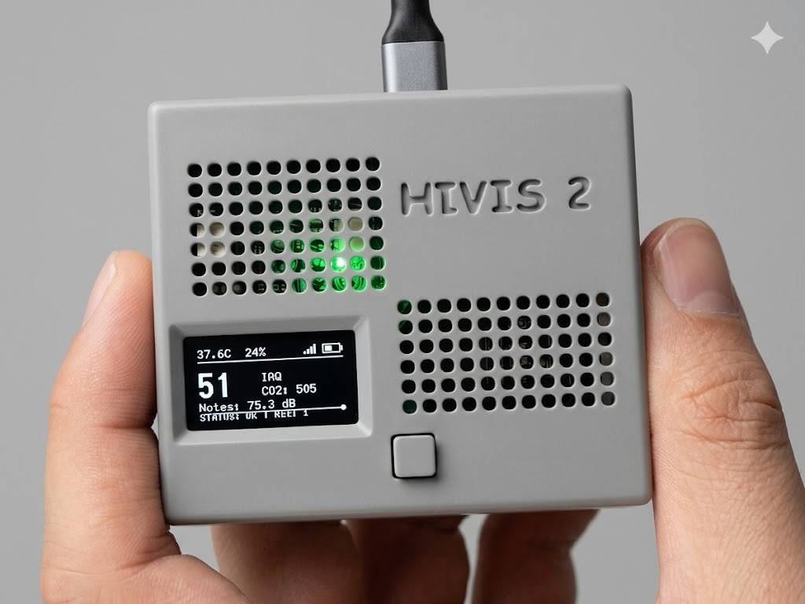
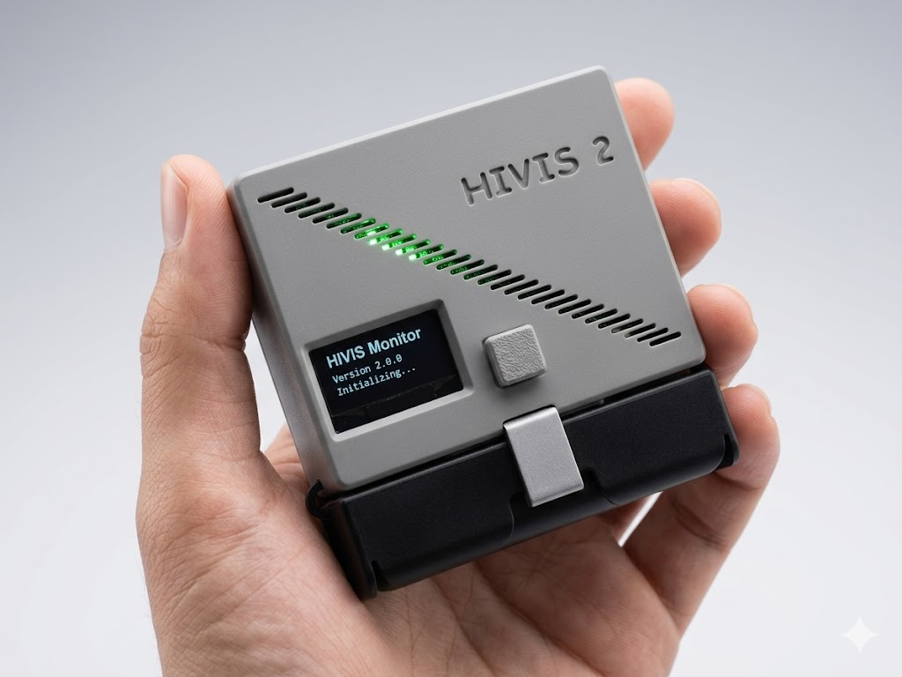
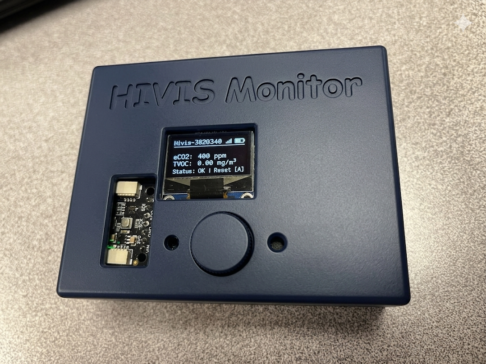
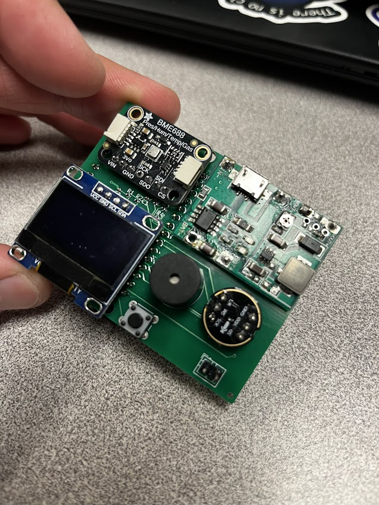

From breadboard to wearable IoT device
A complete record of how HIVIS Monitor was designed, prototyped, rebuilt, and shipped — hardware, firmware, and infrastructure.




Working near furnaces and in basements, I kept wondering: is the air around me safe? Commercial IAQ monitors exist — but they're expensive, cloud-dependent, and designed for offices. Not for the worker with tools on their belt.
The first step was proving that affordable sensors could give meaningful readings. Everything started on a breadboard: an ESP32 DoIt DevKit V1, a Bosch BME688 air quality sensor, an INMP441 MEMS microphone for sound level, an SSD1306 OLED display, and a J5019 charger/boost module for battery power.
"eCO₂ gives a ventilation picture, bVOC gives a chemical exposure picture, and both combine into the IAQ score as a single actionable number on the OLED."
| MCU | ESP32 DoIt DevKit V1 (30-pin) |
| Air Quality | Bosch BME688 — temp, humidity, pressure, gas (MOX) |
| Acoustics | INMP441 I2S MEMS microphone |
| Display | SSD1306 0.96" OLED (I2C) |
| Power | J5019 charger/boost + LiPo battery |
First prototype — all components on breadboard
Custom perfboard layout — first permanent assembly
The breadboard proved the concept. The next step was making it a real device — something that could be worn, powered from a battery, and used on a job site.
Version 1 moved from loose jumper wires to a structured layout on a prototyping board. This is where the physical design language started taking shape: small footprint, OLED facing up for quick glance reads, single button for all interactions.
The red button was too large. The battery connector was awkward. The board was thicker than it needed to be. But the core system — sensor, display, button, buzzer — worked exactly as intended. V1 validated the form factor.

V1 powered up — OLED showing live IAQ, eCO₂, sound data
The firmware was built around one clear rule: separate secrets from
configuration. Credentials (WiFi, MQTT) live in an AES-128 CBC
encrypted
credentials.json. All hardware parameters live in a plain
config.json
that field technicians can adjust.
| Provisioning | WiFiManager captive portal — first boot |
| Security | AES-128 CBC encrypted credentials + SecureVault |
| Connectivity | MQTT over TLS, auto local/external server switching |
| Offline | LittleFS NDJSON buffering with approximate timestamps |
| OTA | HTTP polling with per-device approval flag |
| UI | Single button — short / long / double / 5s-hold gestures |
| Calibration | BSEC2 NVS persistence across reboots |
One of the most interesting firmware challenges was building a complete UI with a single tactile button. Short press, long press, double press, and a 5-second hold — each triggers a distinct action with a unique piezo tone. Users cycle through display screens, trigger manual uploads, or enter provisioning mode without ever connecting a computer.
"The gap between planning and actually getting things done — HIVIS Monitor taught me why both matter equally."
The BME688 uses Bosch's BSEC2 library for intelligent gas sensing. Because it's a metal oxide sensor, it can't selectively detect specific gases like H₂S or CO — it responds to a broad range of volatile compounds. This is a known limitation, not a flaw. The IAQ score reflects air quality broadly, not a specific chemical concentration.
Commercial IoT platforms send your data to a cloud you don't control. HIVIS Monitor runs entirely on a self-hosted server — a Lenovo ThinkPad X200 on Ubuntu Server, running the full stack in Docker containers.
Data flows from the ESP32 → MQTT broker → Node-RED → InfluxDB, then displayed in Grafana. Remote access via Tailscale. External MQTT at mqtt.hvht.net with TLS. Nightly backups to OneDrive via rclone.
Three Grafana dashboards are provisioned and available live at hvht.net:
| Per-Device | 5s refresh · individual device readings, trends |
| Fleet | 30s refresh · all devices, overview status |
| Historical | 5m refresh · long-term exposure analysis |
"There's a reason certified sensors cost what they do. Building this taught me how complete systems are actually made."

Custom 70×50mm 2-layer PCB — all components placed
Prototyping boards work — but they're thick, fragile, and hard to reproduce. A custom PCB meant a device that could be manufactured consistently, fitted precisely into a printed enclosure, and assembled with SMD components.
The board was designed in KiCad 8 with ESP32 on the back copper layer and all other components on the front. JLCPCB handled both bare fabrication and SMD assembly of passive components.
| Size | 70 × 50 mm |
| Layers | 2 (F.Cu + B.Cu) |
| MCU | ESP32 DoIt DevKit on B.Cu |
| Design Tool | KiCad 8 + FreeRouting autorouter |
| Fabrication | JLCPCB (bare PCB + SMD assembly) |
Early PCB iteration
PCB powered, live data
Final board layout
3D printing the custom enclosure
HIVIS Monitor 2.0 is not just a better device — it's a scalable system. The architecture supports up to 10 simultaneous devices, each publishing to the same server, each visible in the fleet dashboard with its own device ID.
The enclosure is 3D-printed. The board is custom-fabricated. The firmware handles first-boot provisioning, encrypted credentials, automatic network switching, OTA updates, and offline buffering without any user configuration beyond the initial captive portal setup.
The May 4th showcase will run three active devices over a phone hotspot, all reporting live to the server. Visitors can see real readings — IAQ scores, eCO₂ ppm, bVOC, temperature, humidity, pressure, sound level — on the fleet dashboard and per-device cards.
HIVIS 2.0 — final form factor, 3D-printed enclosure
Live readings: IAQ 51 · eCO₂ 505ppm · 75.3 dB
The full fleet dashboard is running right now at hvht.net — real devices, real data.